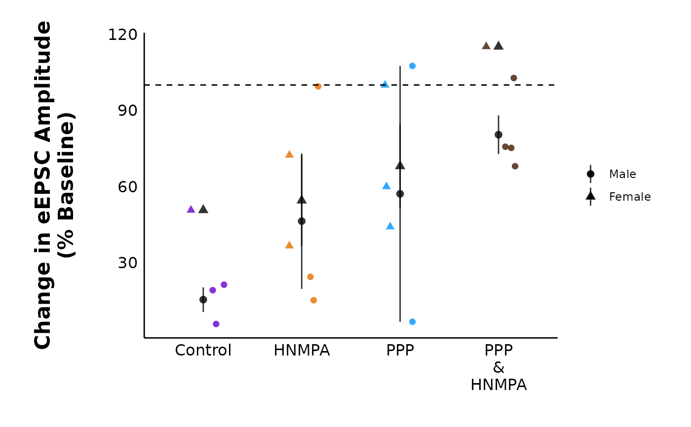
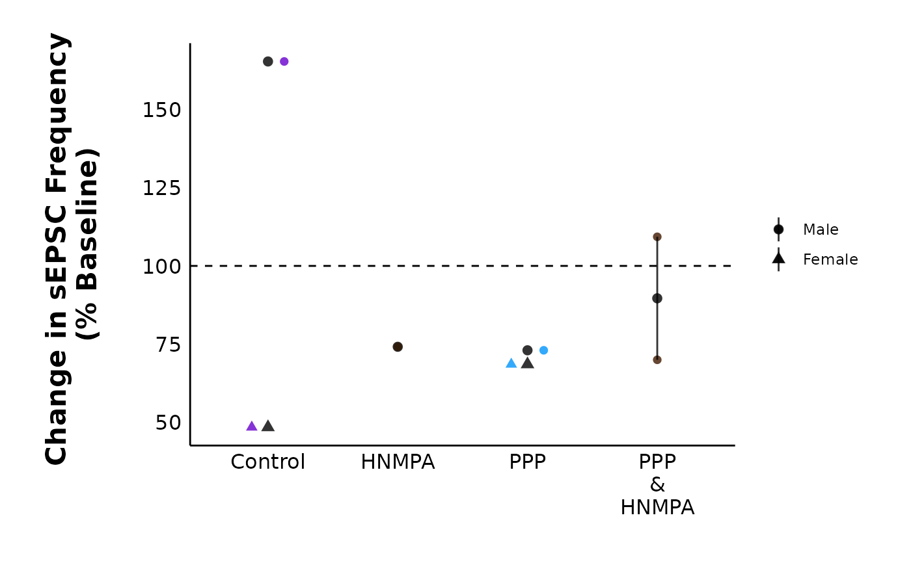

This function allows you to visually compare how current amplitudes changed X minutes after a treatment.
Usage
plot_percent_change_comparisons(
data,
current_type = "eEPSC",
y_variable,
plot_category,
include_all_treatments = "yes",
list_of_treatments = NULL,
filename_suffix = "",
large_axis_text = "no",
included_sexes = "both",
male_label = "Male",
female_label = "Female",
plot_width = 8,
treatment_colour_theme,
theme_options,
save_plot_png = "no",
ggplot_theme = patchclampplotteR_theme()
)Arguments
- data
A dataframe generated from
make_summary_EPSC_data(). Ifcurrent_type = "eEPSC", this must be the percent change dataframe generated frommake_summary_EPSC_data(). Use$percent_changeto access this dataframe. Ifcurrent_type = "sEPSC", this can either be$percent_change_amplitudeor$percent_change_frequency.- current_type
A character describing the current type. Allowed values are
"eEPSC"or"sEPSC".- y_variable
A character value (must be
"amplitude"forcurrent_type = "eEPSC". Forcurrent_type = "sEPSC", this must be"amplitude"or"frequency", corresponding to$percent_change_amplitudeor$percent_change_frequency, respectively).- plot_category
A numeric value specifying the category, which can be used to differentiate different protocol types. In the sample dataset for this package,
plot_category == 2represents experiments where insulin was applied continuously after a 5-minute baseline period.- include_all_treatments
A character (
"yes"or"no") specifying if the plot will include data from all treatments. If"no", you must specify a list of treatments inlist_of_treatments.- list_of_treatments
A list of character values describing the treatments that will be in the plot. Defaults to
NULL, since include_all_treatments is"yes"by default.- filename_suffix
Optional character value to add a suffix to the filename of the .png file created with this plot. Could be useful if you have specified a custom list of treatments.
- large_axis_text
A character (
"yes"or"no"). If"yes", a ggplot theme layer will be applied which increases the axis text.- included_sexes
A character value (
"both","male"or"female"). Useful if you want to have a plot with data from one sex only. Defaults to"both". If you choose a single sex, the resulting plot will have"-males-only"or"-females-only"in the file name.- male_label
A character value used to describe how males are encoded in the
sexcolumn of the dataframe used indata. This MUST match the value for male data in thesexcolumn, and it must be consistent across data sheets. Defaults to"Male".- female_label
A character value used to describe how females are encoded in the
sexcolumn of the dataframe used indata. This MUST match the value for female data in thesexcolumn, and it must be consistent across data sheets. This must be consistent in all data sheets. Defaults to"Female".- plot_width
A numeric value specifying the width of the plot. Defaults to 8, but you will need to adjust this depending on how many treatments you have.
- treatment_colour_theme
A dataframe containing treatment names and their associated colours as hex values. See sample_treatment_names_and_colours for an example of what this dataframe should look like.
- theme_options
A dataframe containing theme options, defaults to
sample_theme_options. See sample_theme_options for an example of what this dataframe should look like and how you can customize these values.- save_plot_png
A character (
"yes"or"no"). If"yes", the plot will be saved as a .png usingggsave(). The filepath depends on the current type, but they will all go in subfolders belowFigures/in your project directory.- ggplot_theme
The name of a ggplot theme or your custom theme. This will be added as a layer to a ggplot object. The default is
patchclampplotteR_theme(), but other valid entries includetheme_bw(),theme_classic()or the name of a custom ggplot theme stored as an object.
Examples
plot_percent_change_comparisons(
data = sample_summary_eEPSC_df$percent_change_data,
plot_category = 2,
current_type = "eEPSC",
y_variable = "amplitude",
treatment_colour_theme = sample_treatment_names_and_colours,
theme_options = sample_theme_options
)
#> Warning: Removed 2 rows containing missing values or values outside the scale range
#> (`geom_segment()`).

# Spontaneous Current Frequency
# (note: this plot only has a few datapoints
# because sample_sEPSC_df is intentionally
# small to reduce file size.)
plot_percent_change_comparisons(
data = sample_summary_sEPSC_df$percent_change_frequency,
plot_category = 2,
current_type = "sEPSC",
y_variable = "frequency",
included_sexes = "both",
treatment_colour_theme = sample_treatment_names_and_colours,
theme_options = sample_theme_options
)
#> Warning: Removed 5 rows containing missing values or values outside the scale range
#> (`geom_segment()`).
